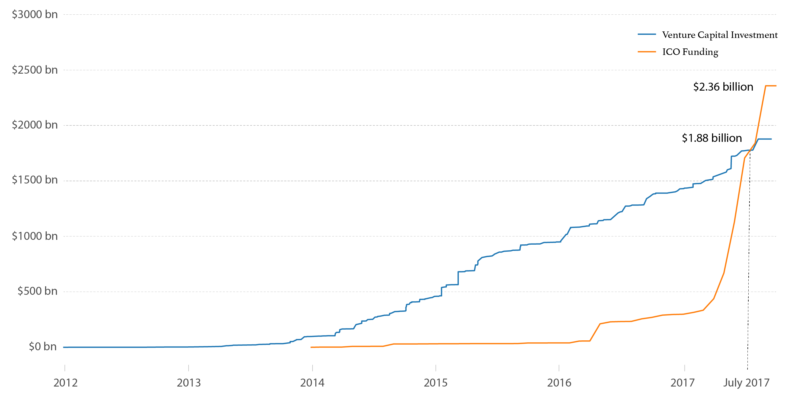

by CHEN WANG | September 17, 2017
After a mediocre August with ICOs totaling only $134.14 million, the number of this month has already reached $516.87 million by September 17, according to data from the CoinDesk ICO Tracker. Approximately half of the volume, $257 million, was contributed by the record-breaking ICO of Filecoin.
As in last three months, ICOs have continued on a high increase rate while venture capital investments slowed down their pace, the cumulative capital raised via ICO funding has already surpassed all-time venture capital investments by $0.48 billion, standing at $2.36 billion on September 17.
The future of ICO funding has been misted over with the series of restrictions directing against cryptocurrency ICO and trading by the Chinese government. However, according to the number of responses collected through CoinDesk’s ICO Questionnaire, which reflects potential coin issuings, has remained stable after the policy storms. Among 131 responses collected from August 8 to September 18, 21 were collected during the 15 days before September 4, the day that China’s central bank published the immediate ban on ICO funding, and 33 were collected during the 15 days after that day.